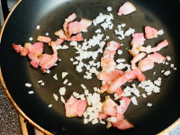
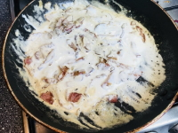
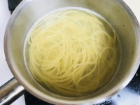
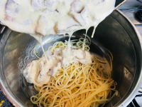

Рецепт дня: СПАГЕТТИ КАРБОНАРА
- 250 г Макароны (спагетти)
- 100-150 г Бекон
- 50 г Пармезан
- 50 г Лук (белый)
- 2 шт. Яйцо
- 50 мл Сливки (30-33%)
- 20 г Петрушка (листья)
- по вкусу Соль и перец
1. Бекон порежьте небольшими кусочками и обжарьте на сковороде до румяной корочки с 50 г лука, порезанного мелким кубиком. Снимите с огня и дайте немного остыть.
2. К теплому бекону добавьте яйца, сливки и тертый пармезан. Хорошо перемешайте, чтобы смесь стала однородной.
3. Спагетти отварите до готовности, согласно инструкции, в подсоленной воде. Откиньте на дуршлаг и сразу соедините с соусом. Чтобы паста была более сочной, оставьте немного воды, в которой варились макароны, на сковородку с соусом. Достаточно 1-2 ст. л.
4. Хорошо перемешайте, соус должен стать густым под действием горячих макарон. Добавьте соль, перец по вкусу и листья петрушки. При желании дополнительно посыпьте тертым пармезаном.
